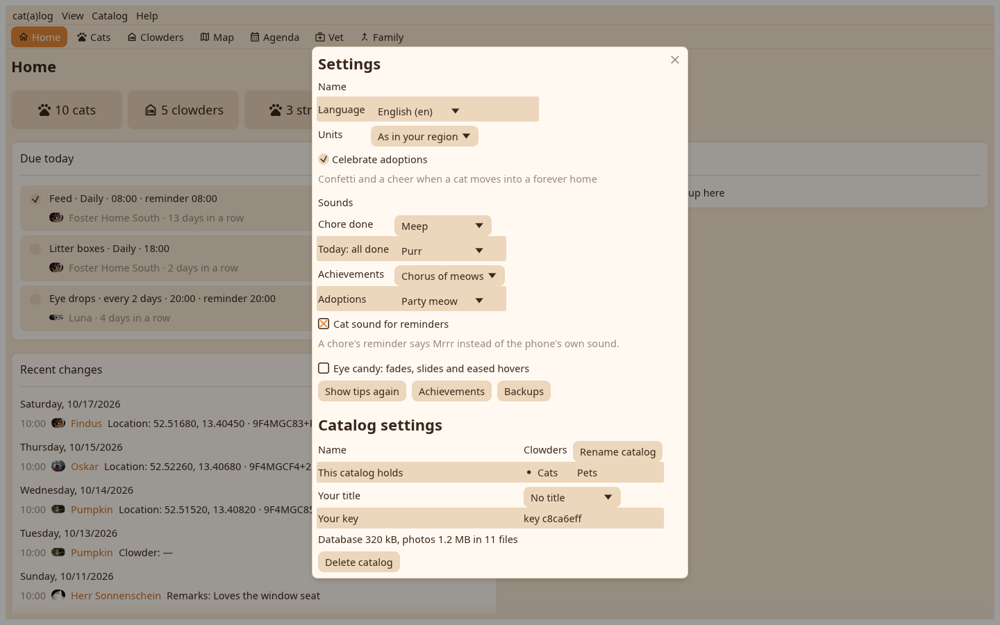

Settings under the app's name: your author name, the language, the unit system as three radios, the sound for every moment, the Eye candy switch that stills every fade and slide, and the tips to replay.

The Catalogs page lists every catalog on this device on the left and what can be done with the chosen one on the right: create, open, rename, delete, share through the folder or stop sharing. Switching keeps the desk's cards per catalog.
What the chores earned, with the cheers in the cats' voices; the same as on the phone.
The desk opens as large and where it was left, remembers the list pane's width, and registers its launcher entry with the cat icon on Linux on every start.